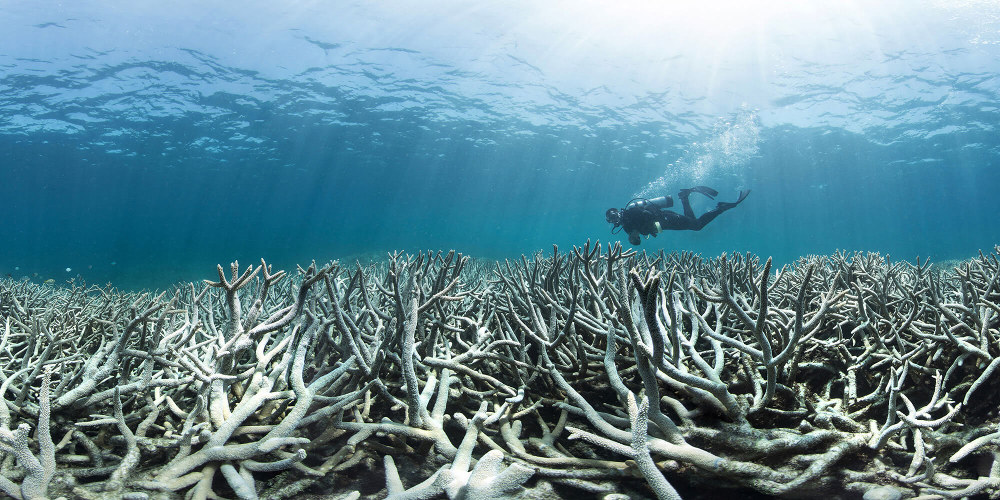
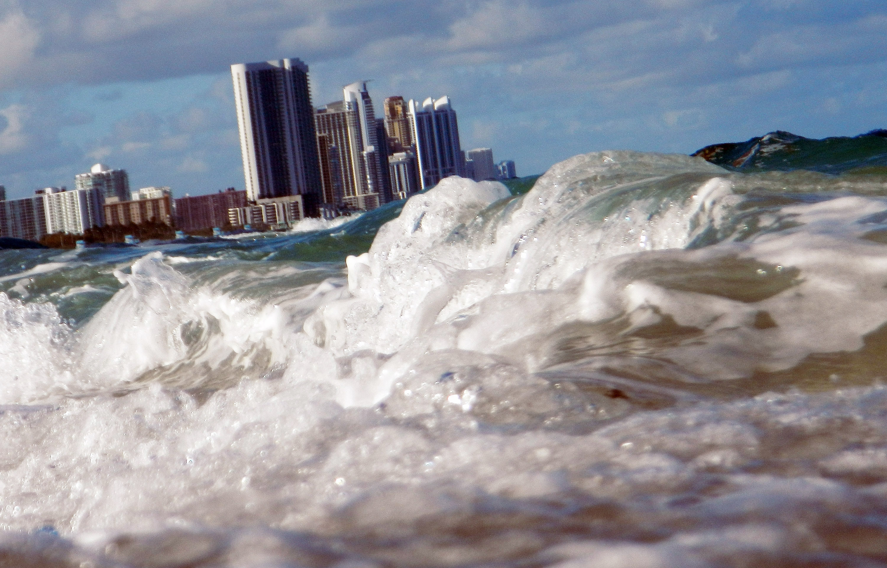
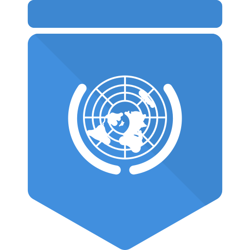

Coral reefs are one of the most diverse ecosystems in the marine ecosystem. They are not
only habitats and food sources for millions of organisms. It is also a major economic source of coral reef
tourism, commercial fishing and leisure fishing, and these industries can generate huge economic benefits
every year through coral reefs. However, with the increase of global warming and human activities, the
temperature and acidification of seawater increase, which makes corals whiten. This phenomenon is a response
of corals to environmental pressure. This phenomenon is that corals lose color and eventually lead to coral
death. This not only poses a threat to coral reefs themselves, but also has a serious impact on the entire
marine ecosystem.
Why The Coral bleach?

Rise in Sea levelSea level rise will also affect the survival of coral reefs. As the sea level
rises,
the waters where coral reefs are located will also expand and the depth will increase. Studies show
that
since 1880, the global average sea level has risen by about 20-25 cm, which is mainly due to the
melting
water of glaciers and ice sheets and the thermal expansion of seawater when it warms. Satellite
records
show that the global average sea level in 2021 is about 98 mm higher than that in 1993, which is the
highest annual average level in satellite records.[1]
Rise in Sea temperatureAccording to the research from Australian government, whenever the highest
temperature in summer exceeds 1-1.5 degrees, it takes only one and a half months for coral reefs to
whiten, and if it continues, it will directly lead to the death of coral reefs. When corals die, the
ecosystem services they provide will also be destroyed, such as providing habitats, offshore
environment and food sources.Since 1979, there have been eight large-scale bleaching events, all of
which are caused by abnormal sea surface temperature. [2]
Data
For humans, 1-1.5 degrees is a small number, but for corals, it is a death blow. The
graphs above show sea level temperatures for seven major countries where the average temperature is
already
very close to or has exceeded the 1-1.5 degree rise compared to 1990, and they are still rising on
average.
Here the sea level temperature fluctuations in Canadian waters are particularly dramatic and well above
the
overall average. As a result, corals are under great environmental stress leading to bleaching. The
average
temperature also tends to increase over time. We can also combine this with the graphs below, which show
coral bleaching events in the three seas Australasia, Indian Ocean and Pacific. A pattern can be
identified
here that coral bleaching events increase when sea level temperatures fluctuate significantly, so we can
conclude that sea level temperatures have a significant impact on corals. For more details please
interact
with the graphs to switch between different graph formats and countries to compare the data.
At the same time, there is another issue that can exacerbate the bleaching of corals,
and that is the rise in sea level. The depths at which coral reefs live are very strict as they affect
how much sunlight the coral can absorb and if the depth of the sea keeps rising the reef will gradually
bleach as it cannot absorb it, but as the graph below shows the total average depth of the Atlantic
Ocean, Southern Ocean and the world, we can see that they All are on an upward trend. This means that
coral reefs are decreasing in size and will eventually die out in parts of the ocean. You can interact
with the graph below to see the data.
What we can do?
Reduce CO2 emissions
Renewable energy
Enhancing coral reef protection
Therefore, we all have a responsibility to protect coral reefs. Reducing carbon dioxide
emissions and using renewable energy are important measures to protect coral reefs. We also need to reduce
pollution and fishing of coral reefs and promote the health and diversity of marine ecosystems. At the same
time, we should strengthen education and awareness of coral reef protection and raise people's awareness and
action. Let's act together to protect these beautiful coral reefs so that they can provide us with ecosystem
services.
Read More

United Nations (UN)
United States Environmental Protection Agency (EPA)